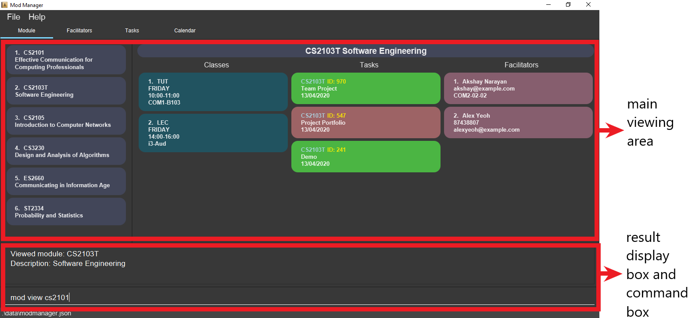

By: Team AY1920S2-CS2103T-F10-4 Since: Jan 2020 Licence: MIT
- 1. Introduction
- 2. About
- 3. Quick Start
- 4. Features
- 4.1. Viewing help :
help - 4.2. Managing modules :
mod - 4.3. Managing classes :
class - 4.4. Managing tasks :
task- 4.4.1. Adding a task
- 4.4.2. Marking a task as done
- 4.4.3. Viewing all tasks across modules in ModManger
- 4.4.4. Viewing tasks for a specific module in ModManger
- 4.4.5. Viewing all undone tasks
- 4.4.6. Finding a task by description
- 4.4.7. Searching tasks by date
- 4.4.8. Finding upcoming tasks
- 4.4.9. Editing a task
- 4.4.10. Deleting a task
- 4.5. Managing facilitators :
facil - 4.6. Managing calendar :
cal - 4.7. Listing commands :
cmd - 4.8. Automatic command guidance
- 4.9. Clearing all entries :
clear - 4.10. Exiting the program :
exit - 4.11. Upcoming
[coming in v2.0]
- 4.1. Viewing help :
- 5. FAQ
- 6. Command Summary
1. Introduction
Welcome to Mod Manager!
Mod Manager is a desktop application that assists students in managing schedules and contacts for their modules in a semester.
More importantly, Mod Manager is optimized for those who prefer to work with a Command Line Interface (CLI) while still having the benefits of a Graphical User Interface (GUI).
If you can type fast, Mod Manager can get your management of schedules and contacts done faster than traditional GUI apps.
Interested? Jump to the Section 3, “Quick Start” to get started. Enjoy!
2. About
This user guide helps you to master how to use Mod Manager. It explains the features and commands supported by Mod Manager, with examples to illustrate how the application works.
3. Quick Start
3.1. Installing Mod Manager
Here are the steps to get you started with using Mod Manager:
-
Ensure you have Java
11or above installed in your Computer. -
Download the latest
modmanager.jarhere. -
Copy the file to the folder you want to use as the home folder for your Mod Manager.
-
Double-click the file to start the app. The GUI should appear in a few seconds.
Figure 1. GUI for Mod Manager -
Type the command in the command box and press Enter to execute it.
e.g. typinghelpand pressing Enter will open the help window.Here are some example commands that you can try:
-
cmd all: lists all available commands in our Mod Manager. -
mod add /code CS2103T /desc Software Engineering: adds the module CS2103T to the module list. -
class add /code CS2103T /type LEC /at FRIDAY 14:00 16:00 /venue i3-Aud: adds a class to the module CS2103T. -
task add /code CS2103T /desc Complete tP tasks: adds a task to the module CS2103T. -
facil add /name Akshay Narayan /email dcsaksh@nus.edu.sg /code CS2103T: adds a facilitator to the module CS2103T. If you are rushing to write an e-mail to your lecturer, you can refer to this conveniently. -
cal view /week this: views your schedules for the current week. -
exit: exits the application.
-
-
Refer to Section 4, “Features” for details of each command.
3.2. Using Mod Manager
This section offers an overview of Mod Manager’s layout so that you can find what you need easily.
There are two main areas in Mod Manager:
-
A result display box and command box at the bottom of the screen.
-
A main viewing area that occupies most of the screen.
The command box is the area for you to enter commands. The result of each command will be shown in the result display box, immediately above the command box.

The main viewing area shows all the contents for one of the four tabs at any point in time. The four tabs are Module, Facilitators, Tasks and Calendar
-
Module tab contains information about lessons, tasks and facilitators for a particular module. It also shows the list of modules you currently have.
 Figure 3. Module tab
Figure 3. Module tab -
Facilitators tab contains information about all the facilitators you currently have.
 Figure 4. Facilitators tab
Figure 4. Facilitators tab -
Tasks tab contains information about all the tasks you currently have.
 Figure 5. Tasks tab
Figure 5. Tasks tab -
Calendar tab shows tasks and lessons in a week.
 Figure 6. Calendar tab
Figure 6. Calendar tab
4. Features
Command Format
-
Words in
UPPER_CASEare the parameters to be supplied by the user. -
Items in square brackets are optional. Items in curly brackets are mutually exclusive.
-
Items with
… after them can be used multiple times including zero times. -
Parameters can be in any order.
-
Module code and facilitator name are case-insensitive.
4.1. Viewing help : help
Opens up the help window that displays you a link to the user guide.
Format: help
4.2. Managing modules : mod
The commands in this section carry out operations on the module list in Mod Manager. Executing these commands will bring you to the module tab.
4.2.1. Adding a module
You can add a module to Mod Manager.
Format:
-
mod add /code MOD_CODE [/desc DESCRIPTION]
Parameter constraints:
Examples:
You can add a module to the module list.
To add a module with the module code CS2103T and description Software Engineering,
you can type the following command:
mod add /code CS2103T /desc Software Engineering
mod add /code CS2103T /desc Software Engineeringmod add /code CS2103T /desc Software EngineeringYou can also add a module without description.
To add a module with the module code CS2101,
you can type the following command:
mod add /code CS2101
mod add /code CS2101mod add /code CS21014.2.2. Viewing all modules
You can view a list of all modules.
Format:
-
mod list
Example:
You can view all modules in Mod Manager. To see a list of all modules, you can type the following command:
mod list
mod list4.2.3. Viewing information of a module
You can view all classes, tasks and facilitators for a module.
Format:
-
mod view INDEX -
mod view MOD_CODE
Parameter constraints:
Examples:
You can view a module using the index in the module list. To view all classes, tasks and facilitators for the second module in the module list, you can type the following command:
mod view 2
mod view 2mod view 2Alternatively, you can view a module using the module code.
To view all classes, tasks and facilitators for the module CS2103T,
you can type the following command:
mod view CS2103T
mod view CS2103Tmod view CS2103T4.2.4. Editing a module
You can edit the information of a module.
Format:
-
mod edit INDEX [/code NEW_MODE_CODE] [/desc DESCRIPTION] -
mod edit MOD_CODE [/code NEW_MODE_CODE] [/desc DESCRIPTION]
Parameter constraints:
Examples:
You can edit a module using the index in the module list.
To update the module code of the first module in the module list to CS2113T,
you can type the following command:
mod edit 1 /code CS2113T
mod edit 1 /code CS2113Tmod edit 1 /code CS2113TAlternatively, you can edit a module using the module code.
To update the description of the module CS2101 to Effective Communication for Computing Professionals,
you can type the following command:
mod edit CS2101 /desc Effective Communication for Computing Professionals
mod edit CS2101 /desc Effective Communication for Computing Professionalsmod edit CS2101 /desc Effective Communication for Computing ProfessionalsYou can also remove the description of a module without specifying any input after the prefix /desc.
To remove the description of the third module in the module list,
you can type the following command:
mod edit 3 /desc
mod edit 3 /descmod edit 3 /desc4.2.5. Deleting a module
You can delete a module from Mod Manager. All classes, tasks and facilitators for that module will also be deleted.
Format:
-
mod delete INDEX -
mod delete MOD_CODE
Parameter constraints:
Examples:
You can delete a module using the index in the module list. To delete the second module in the module list, you can type the following command:
mod delete 2
mod delete 2mod delete 2Alternatively, you can delete a module using the module code.
To delete the module with the module code CS2103T,
you can type the following command:
mod delete CS2103T
mod delete CS2103Tmod delete CS2103T4.3. Managing classes : class
4.3.1. Adding a class
Adds a class to a module.
Format: class add /code MOD_CODE /type CLASS_TYPE /at DAY START_TIME END_TIME [/venue VENUE]
Parameter constraints:
Example: class add /code CS2103T /type LEC /at FRIDAY 14:00 16:00 /venue i3-Aud
4.3.3. Finding classes by day
Finds classes occurring on a particular day.
Format: class find /at DAY
Parameter constraints:
Example: class find /at MONDAY
4.3.5. Editing a class
Edits the information of the class. Class is selected by its index in the class list of a module.
Format: class edit INDEX /code MOD_CODE [/code NEW_MOD_CODE] [/type CLASS_TYPE] [/at DAY START_TIME END_TIME] [/venue VENUE]
Parameter constraints:
Example: class edit 1 /code CS9000 /venue Home
4.3.6. Deleting a class
Deletes the class from the module. There are 2 ways you can delete a class.
Selects a class to be deleted by its index in the full class list. You can view the full class list by using class list as stated in section 3.3.2.
Format: class delete INDEX
Parameter constraints:
Example: class delete 1
Selects a class to be deleted by its index in the displayed module’s class list. You can view the module’s class list by using mod view MOD_CODE as stated in section 3.2.3.
Format: class delete INDEX /code MOD_CODE
Parameter constraints:
Example: class delete 1 /code CS2103T
4.4. Managing tasks : task
4.4.1. Adding a task
Adds a task to a module.
Format: task add /code MOD_CODE /desc DESCRIPTION [/on DATE] [/at TIME]
Example: task add /code CS3230 /desc Programming Assignment 2 /on 20/02/2020 /at 23:59
Parameter constraints:
4.4.2. Marking a task as done
Marks a task as done in the module.
Format: task done /code MOD_CODE /id ID_NUMBER
Example: task done /code CS2103T /id 979
4.4.3. Viewing all tasks across modules in ModManger
Shows a list of all tasks across all modules in the Mod Manager.
Format: task list
4.4.4. Viewing tasks for a specific module in ModManger
Shows a list of tasks for a particular module in the Mod Manager.
Format: task module /code CS2103T
4.4.5. Viewing all undone tasks
Shows a list of all tasks that are not yet done across all modules in the Mod Manager.
Format: task undone
4.4.6. Finding a task by description
With this command, you can find tasks that contain any of the given keywords in their description.
Format: task find DESCRIPTION [MORE_DESCRIPTIONS]…
Parameter constraints:
4.4.7. Searching tasks by date
Searches all tasks that occur on your specified date, month, or year.
Format: task search [/day DAY] [/month MONTH] [/year YEAR]
Example: task search /month 4, task search /day 10 /month 4
Parameter constraints:
4.4.9. Editing a task
From here on, you will be introduced to Mod Manager’s task ID system.
You can edit a task’s description, its date and time details, or both.
Format: task edit MOD_CODE ID_NUMBER [/desc DESCRIPTION] [/on DATE] [/at TIME]
Mod Manager will find the task associated with the task ID number provided and update the information correspondingly.
Example: task edit CS2103T 848 /desc UG submission /on 12/04/2020 /at 23:59
Since you may want to remove the date and time of a task, Mod Manager provides you a way to do so.
Format: task edit MOD_CODE ID_NUMBER [/desc DESCRIPTION] /on non
Example: task edit CS2103T 848 /on non
4.4.10. Deleting a task
You can delete a task from Mod Manager’s system.
Format: task delete MOD_CODE ID_NUMBER
Example: task delete CS2103T 973
4.5. Managing facilitators : facil
The commands in this section carry out operations on the facilitator list in Mod Manager. Executing these commands will bring you to the facilitators tab.
4.5.1. Adding a facilitator
You can add a facilitator to Mod Manager.
Format:
-
facil add /name FACILITATOR_NAME [/phone PHONE] [/email EMAIL] [/office OFFICE] /code MOD_CODE [MORE_MOD_CODES]… -
facil add /name FACILITATOR_NAME [/phone PHONE] [/email EMAIL] [/office OFFICE] /code MOD_CODE [/code MORE_MOD_CODES]…
Parameter constraints:
Examples:
You can add a facilitator to the facilitator list.
To add a facilitator with the name Akshay Narayan, phone 98765432 and email dcsaksh@nus.edu.sg to the modules CS2103T and CS3243,
you can type the following command:
facil add /name Akshay Narayan /phone 98765432 /email dcsaksh@nus.edu.sg /code CS2103T CS3243
facil add /name Akshay Narayan /phone 98765432 /email dcsaksh@nus.edu.sg /code CS2103T CS3243facil add /name Akshay Narayan /phone 98765432 /email dcsaksh@nus.edu.sg /code CS2103T CS3243You can also add a facilitator to multiple modules by typing the prefix /code multiple times.
To add a facilitator with the name Aaron Tan, email tantc@comp.nus.edu.sg and office COM1-0312 to the modules CS1231 and CS2100,
you can type the following command:
facil add /name Aaron Tan /email tantc@comp.nus.edu.sg /office COM1-0312 /code CS1231 /code CS2100
facil add /name Aaron Tan /email tantc@comp.nus.edu.sg /office COM1-0312 /code CS1231 /code CS2100facil add /name Aaron Tan /email tantc@comp.nus.edu.sg /office COM1-0312 /code CS1231 /code CS21004.5.2. Viewing all facilitators
You can view a list of all facilitators sorted in alphabetical order.
Format:
-
facil list
Example:
You can view all facilitators in Mod Manager. To see a list of all facilitators sorted in alphabetical order, you can type the following command:
facil list
facil list4.5.3. Finding a facilitator by name
You can find facilitators by name.
Format:
-
facil find FACILITATOR_NAME [MORE_FACILITATOR_NAMES]…
Parameter constraints:
Examples:
You can search for facilitators by name.
To view all facilitators whose name contains Akshay,
you can type the following command:
facil find Akshay
facil find Akshayfacil find AkshayYou can also search for multiple facilitators or search with partial names.
To view a list of facilitators whose name contains yan or tan,
you can type the following command:
facil find yan tan
facil find yan tanfacil find yan tan4.5.4. Editing a facilitator
You can edit the information of a facilitator.
Format:
-
facil edit INDEX [/name FACILITATOR_NAME] [/phone PHONE] [/email EMAIL] [/office OFFICE] [/code MOD_CODE…] -
facil edit FACILITATOR_NAME [/name FACILITATOR_NAME] [/phone PHONE] [/email EMAIL] [/office OFFICE] [/code MOD_CODE…]
Parameter constraints:
Examples:
You can edit the information of a facilitator using the index in the last shown facilitator list.
To update the name and email of the first facilitator in the last shown facilitator list in the facilitator tab to Akshay and hisnewemail@nus.edu.sg respectively,
you can type the following command:
facil edit 1 /name Akshay /email hisnewemail@nus.edu.sg
facil edit 1 /name Akshay /email hisnewemail@nus.edu.sgfacil edit 1 /name Akshay /email hisnewemail@nus.edu.sgAlternatively, you can edit the information of a facilitator using the name of the facilitator.
To update the office of the facilitator with the name Akshay Narayan to COM2-0203,
you can type the following command:
facil edit Akshay Narayan /office COM2-0203
facil edit Akshay Narayan /office COM2-0203facil edit Akshay Narayan /office COM2-0203You can also remove the information of a facilitator without specifying any input after the prefix /phone, /email or /office.
To remove the phone of the second facilitator in the last shown facilitator list in the facilitator tab,
type the following command:
facil edit 2 /phone
facil edit 2 /phonefacil edit 2 /phone4.5.5. Deleting a facilitator
You can delete a facilitator from Mod Manager.
Format:
-
facil delete INDEX -
facil delete FACILITATOR_NAME
Parameter constraints:
Examples:
You can delete a facilitator using the index in the last shown facilitator list. To delete the first facilitator in the last shown facilitator list in the facilitator tab, you can type the following command:
facil delete 1
facil delete 1facil delete 1Alternatively, you can delete a facilitator using the name of the facilitator.
To delete the facilitator with the name Akshay Narayan,
you can type the following command:
facil delete Akshay Narayan
facil delete Akshay Narayanfacil delete Akshay Narayan4.6. Managing calendar : cal
4.6.1. Viewing calendar for current week
Shows you the calendar for the current week. It displays the tasks and classes you have in the current week.
Format: cal view /week this
Expected outcome:
Mod Manager brings you to the Calendar tab and displays the calendar as shown below.
The yellow boxes represents the tasks you have while the blue boxes represents the lessons you have in the current week.
cal view /week this4.6.2. Viewing calendar for next week
Shows you the calendar for next week. It displays the tasks and classes you have in next week.
Format: cal view /week next
Expected outcome:
Mod Manager brings you to the Calendar tab as shown below.
The yellow boxes represents the tasks you have while the blue boxes represents the lessons you have in next week.
cal view /week next4.6.3. Finding empty slots
Finds and lists to you the empty slots from current day to end of the week of the current day.
Format: cal find empty
Expected outcome:
Mod Manager brings you to the Calendar tab and lists to you the list of empty slots in the result display box as shown below.
cal find emptyThe full message in the result display box in the above figure is:
4.7. Listing commands : cmd
4.7.2. Listing commands for a specific feature
Lists commands for a specific group.
Format: cmd group COMMAND_WORD
Example: cmd group task
4.8. Automatic command guidance
Provides guidance for mistyped commands by showing a list of possible valid commands.
The command(s) closest to your mistyped one will be shown: both the syntax format(s) and context-dependent examples.
4.10. Exiting the program : exit
Exits the program.
Format: exit
Expected outcome:
The application will close automatically. At the same time, the Mod Manager data will be saved automatically in your hard disk.
Hence, you do not need to save manually.
4.11. Upcoming [coming in v2.0]
These features will be available in the next version of Mod Manager.
4.11.1. Using indexing command system [coming in v2.0]
Accesses modules, classes, tasks and facilitators using an indexing system.
4.11.2. Undoing previous command [coming in v2.0]
Restores the Mod Manager to the state before the previous undoable command was executed.
4.11.3. Categorising a tasks [coming in v2.0]
Add tags to a task.
4.11.4. Adding a priority level to a task [coming in v2.0]
Adds a priority level to a task.
4.11.5. Receiving reminders [coming in v2.0]
Receive reminders for deadlines and events the next day.
5. FAQ
Q: How do I transfer my data to another Computer?
A: Install the app in the other computer and overwrite the empty data file it creates with the file that contains the data of your previous Mod Manager folder.
6. Command Summary
| Category | Commands |
|---|---|
Calendar |
|
|
|
|
|
Class |
|
|
|
|
|
|
|
|
|
Clear |
|
Command |
|
|
|
Exit |
|
Facilitator |
|
|
|
|
|
|
|
|
|
Help |
|
Module |
|
|
|
|
|
|
|
|
|
Task |
|
|
|
|
|
|
|
|
|
|